class: center, middle, inverse, title-slide # .huge[The Humble Guinea Pig] ## …Cute, Furry and Deserving of a Better Genome Assembly… ### <div class="line-block"><a href="http://sirselim.github.io/">Miles Benton</a><br /> Senior Scientist Bioinformatics<br /> Human Genomics, Institute of Environmental Science and Research (ESR)<br /> <br /> .large[Queenstown Research Week, Queenstown, 5<small><sup>th</sup></small> September 2019]<br /> <br /> <br /> .center[]</div> --- class: middle # .center[Advocate for reproducible research...] ## .center[Where possible my presentations and code are available online] <br /> <p> .center[ <img src="images/github_logo.png" style="width: 520px; margin-right: 1%; margin-top: 1.5em;"/> <img src="images/sirselim_qrcode.png" style="width: 202px; margin-right: 1%; margin-top: 1.5em;"/> ] </p> <br /> .center[[sirselim.github.io/presentations](http://sirselim.github.io/presentations)] --- class: middle # Why guinea pig genomes? --- class: middle <p> .center[ <img src="images/article.png" style="width: 820px; margin-right: 1%; margin-top: 1.5em;"/> ] </p> .small[.center[(*link to article [here](https://tinyurl.com/yy9fuw95)*)]] --- class: middle <p> .center[ <img src="images/GuineaPig.jpg" style="width: 720px; margin-right: 1%; margin-top: 1.5em;"/> ] </p> ## "We deserve a decent reference after everything we've been through!" --- class: middle <p> .center[ <img src="images/promethion.jpg" style="width: 420px; margin-right: 1%; margin-top: 1.5em; border: 3px solid white;"/> <img src="images/NovaSeq6000.jpg" style="width: 320px; margin-right: 1%; margin-top: 1.5em; border: 3px solid white;"/> ] </p> --- class: top <br> <span style="color:#3498DB">**Long read sequencing**</span> * 3 out-bred females <br> -- <span style="color:#3498DB">**Short read sequencing**</span> * 6 animals * 3 females (same animals as above) * 3 males (a brother of each female) <br> -- ... what about the Y chr? ... -- * FISH for Y * sequence on our in-house minION * student project --- class: middle # Slight segue... --- class: false background-image: url("images/titan.jpg") background-size: cover --- class: middle # GPU benchmarking* We have been collecting some metrics and thoughts [here](https://esr-nz.github.io/gpu_basecalling_testing/gpu_benchmarking.html). <br> _*<b>spoiler</b>: it's MUCH faster!!_ --- class: top <br> <br> # Cute, Furry and Deserving of a Better Genome Assembly... <br> <br> -- ## ...unfortunately not quite yet... --- class: top # Liver tissue is being "fun"... <p> .center[ <img src="images/not_good_1.png" style="width: 760px;"/> ] </p> --- class: top # Liver tissue is being "fun"... <p> .center[ <img src="images/better_1.png" style="width: 760px;"/> ] </p> --- class: top # Liver tissue is being "fun"... <p> .center[ <img src="images/not_good_2.png" style="width: 760px;"/> ] </p> --- class: top # Liver tissue is being "fun"... <p> .center[ <img src="images/better_2.png" style="width: 760px;"/> ] </p> --- class: top # Liver tissue is being "fun"... <p> .center[ <img src="images/not_good.png" style="width: 760px;"/> ] </p> --- class: top # Liver tissue is being "fun"... <p> .center[ <img src="images/better.png" style="width: 760px;"/> ] </p> --- class: top # What can I tell you? -- .large[We have a very high coverage complete mt genome...] <br> -- <br> 1. downsample ([fastx-sample.pl](https://gitlab.com/gringer/bioinfscripts/blob/master/fastx-sample.pl) David Eccles) 2. mapping - [minimap2](https://github.com/lh3/minimap2) 3. assembly - [miniasm](https://github.com/lh3/miniasm) 4. consensus ```sh # GFA to fasta awk '$1 ~/S/ {print ">"$2"\n"$3}' reads.gfa > reads.fasta ``` 5. re-map - [minimap2](https://github.com/lh3/minimap2) 6. polish - [racon](https://github.com/lbcb-sci/racon) --- class: middle <p> .center[ <img src="images/Cpor_assembly_k12_001.png" style="width: 590px;"/> ] </p> --- class: middle <p> .center[ <img src="images/Cpor_assembly_k8_001.png" style="width: 590px;"/> ] </p> --- class: middle <p> .center[ <img src="images/Cpor_mtDNA_endRepeat.png" style="width: 590px;"/> ] </p> --- class: middle <p> .center[ <img src="images/assembled_guinea_k12_001.png" style="width: 890px;"/> ] </p> --- class: middle <p> .center[ <img src="images/stompPlot_Cpor_mtDNA.png" style="width: 990px;"/> ] </p> --- class: middle <p> .center[ <img src="images/msa_nucl_assembled_gp_Cpor_mtDNA_rotated.png" style="width: 590px;"/> ] </p> --- class: middle <p> .center[ <img src="images/stompPlot_utg000001c.png" style="width: 990px;"/> ] </p> --- class: middle # How about some epigenetics? --- class: top <br> # Facilitating collaboration * using reproducible research ethos * creating interactive documents and applications * empowers data owners to explore their own data -- ## example RRBS guinea pig liver * pre-term (n=6) vs term (n=6) * shiny app to explore data * differential meth * PCA * interactive results tables -- .center[ Make available via our [internal server](http://leviathan/human_genomics/) and [shinyapps.io](https://www.shinyapps.io). ] --- class: top # Guinea Liver RRBS <p> .pull-left[ <img src="images/pheatmap_dfmeth_20190903.png" style="width: 690px;"/> ] </p> <p> <br> <ul> <br> <br> <br> <li>differential methylation - <a href="https://github.com/al2na/methylKit" target="blank">[methylkit]</a></li> <br> <br> <li>490 CpG sites FDR < 0.05 & >10% diff meth</li> <br> <br> <li>interesting biology / pathways</li> </ul> <br> <br> .pull-left[ Experimental Shiny app [here](https://esr-cri.shinyapps.io/methylation_plotting_app/) ] </p> --- class: middle # Where to next? .large[ * "reboot" the project * complete mtDNA aside * explore long-read base modifications * RRBS: targeted validation * manuscripts ] --- class: top # Acknowledgements <div id="images"> <a href="http://xyz.com/hello"> <img src="images/max.jpg" style="width: 180px; height: 250px; margin-right: 1%; margin-top: 1.5em; border: 3px solid white;"/> <div class="caption"><span style="color:#3498DB">Max Berry (University of Otago)</span></div> </a> <a href="http://xyz.com/hi"> <img src="images/donia.jpg" style="width: 180px; height: 250px; margin-right: 1%; margin-top: 1.5em; border: 3px solid white;"/> <div class="caption"><span style="color:#3498DB">Donia Macartney-Coxson (ESR)</span></div> </a> </div> .pull-left[.medium[ .center[Rebecca Dyson (University of Otago)] .center[<img src="images/UoO_logo.png" style="height: 90px; "/>] ]] .pull-right[.medium[ .center[Jane Clapham (ESR) Joep de Ligt (ESR) David Eccles (Malaghan Institute)] ]]